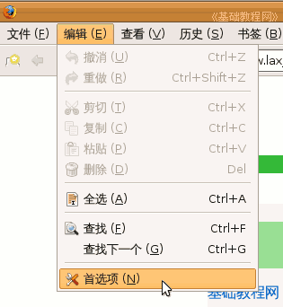
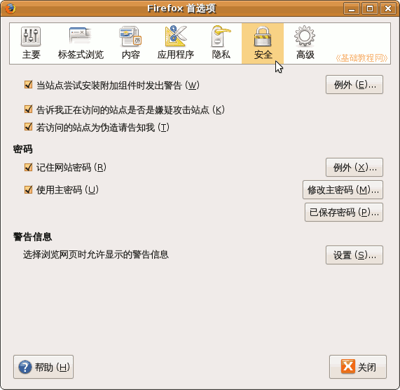
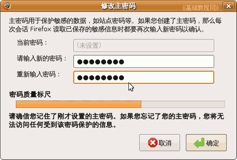
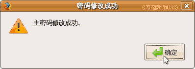
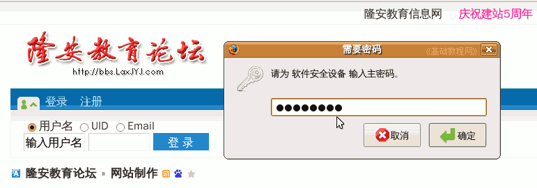
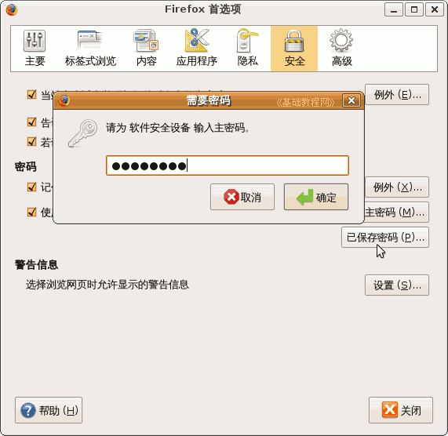
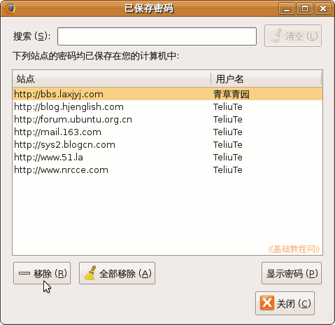

Firefox3 基础教程
作者：TeliuTe 来源：基础教程网
十一、设置主密码 返回目录 下一课如果是自己的机子，可以通过记住密码来方便登录网站，然后设定一个主密码来防止别人查看或使用这些密码，下面我们来看一个练习；
1、设置主密码
1）启动 Firefox，点菜单“编辑－首选项”，Windows 里点“工具－选项”，出来一个选项对话框；

2）在出来的选项对话框里，点“安全”标签，在中间的密码区域，打勾“使用主密码”复选框，上面的“记住网站密码”也打勾选中；

3）点右边的“修改主密码”按钮，在出来的修改密码对话框中，输入两遍新密码，然后点确定，
在出来的修改成功提示里也点“确定”，请牢记设定的密码，忘了可麻烦；
 
4）关闭对话框，以后进入保存了密码的站点时，会先提示输入主密码，然后点“登录”才会自动填充用户名和密码；

5）在查看已保存的密码时，也会提示先输入主密码，然后才可以查看哪些站点保存了密码，

6）对已经保存的密码可以进行查看、移除等操作；

本节学习了设置主密码的基本操作，如果你成功地完成了练习，请继续学习下一课内容；
本教程由86团学校TeliuTe制作|著作权所有
基础教程网：http://teliute.org
美丽的校园……
转载和引用本站内容，请保留作者和本站链接。